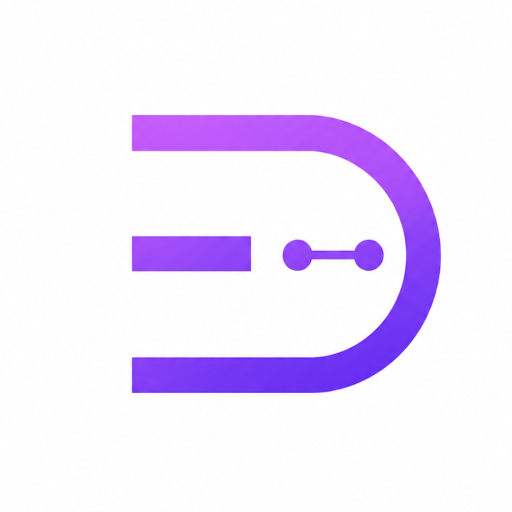

Etapa 01
Aprender con base real
Investigar, practicar y entender cómo se diseñan agentes útiles antes de ofrecerlos a empresas. La prioridad es crear criterio, no aparentar experiencia.

elvirexStudioIA aplicada · aprendizaje real · marca personal
Soy Elvira Díez. Estoy formándome para crear agentes virtuales de chat que ayuden a empresas a trabajar mejor. Mientras, documento el camino real, con pruebas, errores, avances y cómo se vive en directo a través de mis redes sociales.
Aprender con criterio antes de vender una solución.
Mostrar el camino real: fallar, equivocarse, probar y avanzar.
Crear negocios alrededor de la inteligencia artificial útil.
Presentación
Soy Elvira Díez, tengo 19 años y soy española. Desde pequeña me ha interesado la tecnología: los videojuegos, el mundo audiovisual, la informática y esa pregunta que siempre vuelve: cómo funciona todo por dentro.
Al terminar bachillerato entré en un grado superior de Desarrollo de Aplicaciones Web. En mis prácticas estoy trabajando con agentes de IA para llamadas telefónicas, y por primera vez siento una motivación distinta: algo que me fascina, me reta y me hace querer avanzar.
Siempre he tenido actitud de liderar proyectos, y ahora quiero llevar esa energía a elvirexStudio: aprender, construir y ayudar a otras personas y empresas con soluciones de inteligencia artificial.
La diferencia
En redes se ven muchos finales bonitos. elvirexStudio nace para enseñar cómo se vive en directo: fallar, equivocarse, practicar, decidir, formarse y evolucionar.
Etapa 01
Investigar, practicar y entender cómo se diseñan agentes útiles antes de ofrecerlos a empresas. La prioridad es crear criterio, no aparentar experiencia.
Objetivo
Construir soluciones de chat y voz que faciliten tareas, atiendan mejor y ahorren tiempo a empresas.
Aprovechar Instagram y YouTube para documentar mi proceso, enseñar la realidad de emprender y compartir contenido porque es algo que me encanta crear.
Trabajar en inteligencia artificial, emprender y convertir la curiosidad tecnológica en proyectos con impacto.
Comunidad
En Discord quiero crear una comunidad donde podamos compartir avances, dudas, ideas, recursos y aprendizajes. La idea es que el proyecto no sea solo algo que se mira desde fuera, sino un lugar donde podamos crecer juntos y aportar valor entre todos.
Entrar a DiscordApoya el proyecto
Cada apoyo me ayuda a seguir formándome, probando herramientas, creando contenido y dedicando más tiempo a construir este proyecto con calma, criterio y transparencia.
Sigue la evolución
Si quieres ver cómo aprendo, pruebo agentes, documento avances y preparo mi entrada al mercado, puedes seguir el proyecto en mis redes.